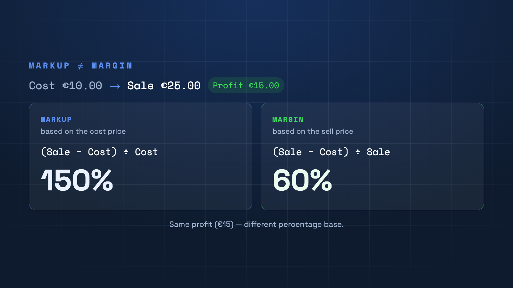

"I have a 50% markup" — but is that the margin? Markup and margin are not the same. Confuse them and you'll misprice. Here's the difference in one minute.

The key difference
Both measure your profit — but on a different base. Markup relates the profit to the cost price; margin relates it to the sell price. The same euro profit yields two very different percentages.
The formulas
Markup = (sell price − cost price) ÷ cost price
Margin = (sell price − cost price) ÷ sell price
Example: cost €10, sale €25, profit €15. Markup = 15 ÷ 10 = 150%. Margin = 15 ÷ 25 = 60%.
Why it matters
If you calculate with "50% margin" but actually mean 50% markup, your sell price is too low. For profitability, margin is what counts — it tells you how much of every euro sold remains as gross profit.
Keep your margin in view
In PriceCalc Pro's extended calculation you see net, gross and margin figures per product — so you never sell below value.
See PriceCalc Pro →